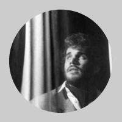
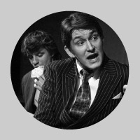
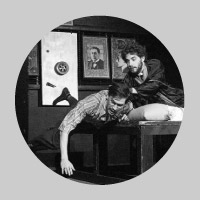
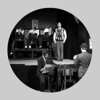

Hudební tragikomedie, 120 minut vèetnì pøestávky, hraje HROBESO
Gangsterská opera o pøátelství na �ivot a na prd. Komedie pro �ivot, jakı je.
„Hospodaøte, dokud se nevrátím (Luk. 19,13)“
Text: Friedrich Dürrenmatt
nové znìní z roku 1980
Pøeklad: Jiøí Stach
Hudba: Paul Burkhard, Ondøej Peèenı
Hudební spolupráce: Kryštof Mende
Texty písní: Miroslav Plešák
Klavír: Matìj Trojan
Scéna, kostımy a plakát: Mirka Hrdinová
Herecká spolupráce: Denisa Nová
Re�ie: Ludìk Horkı
Produkce: Lucie Valenová
Svìtla: Jan Øehoøka
Foto z inscenace: Markéta Jurná, Radek Šedivı
Zvláštní podìkování èestnému asistentu re�ie a dobrému èlovìku MgA. Jiøímu Panznerovi

Osoby a obsazení
Frank V.: Martin Èepelík/Jakub Tvrdík
Ottilie, jeho �ena: Bìla Fuková/Lucie Valenová
Herbert, jeho syn: Oliver Cox/Ján Polák
Franziska, jeho dcera: Markéta Jurná
Emil Böckmann, prokurista: Jakub Baran/Radek Šedivı
Richard Egli, personální šéf: Kryštof Mende
Frieda Fürstová: Kristına Holeèková/Jana Pleskaèová
Lukas Häberlin, pokladník: Dan Parobek/Martin Tafat/Marek Šmidrkal
Gaston Schmalz, pokladník: Luboš Pøívozník
Theo Kappeler, pokladník: Filip Beitl
Päuli Neukomm: Radomír Pivoda
Heini Zurmühl, ošetøovatel, sluha: Jakub Zagar
Jannette alias �u�u, servírka: Tına Tyllerová/Martina Øeháèková
Ernst Schlumpf, továrník: Adam Ondøich
Apollonia Streuliová, hoteliérka: Jana Kobesová/Kateøina Tyllerová
Piaget, majitel továrny na hodinky: Mikoláš Tyc
Traugott von Friedemann, prezident státu: Ondøej Peèenı
Premiéry: 21. a 27. bøezna 2009 v rámci jubilejní 20. sezóny Dìtského dramatického souboru Ty-já-tr
Objednávky, rezervace vstupenek a informace: Ludìk Horkı (tel. 732 547 461), www.hrobeso.com
— Friedrich Dürrenmatt
NÁHODA PØIŠLA ZE ZLÍNA
aneb Jak byl objeven Friedrich Dürrenmatt
Roku 1911 se v tehdejší Moravské Ostravì narodil chlapec jménem Egon Karter, kterı jako patnáctiletı pøišel do uèení do zlínskıch Ba�ovıch závodù. Leè tak si svùj �ivot nepøedstavoval – cosi ho neodolatelnì táhlo k divadlu. A tak k nìmu zbìhl – èím� zaèal takøka neuvìøitelnı �ivotní pøíbìh. U� jako sedmnáctiletı se mladı Egon objevil v opavském nìmeckém divadle jako elév pro všechny obory, jak bylo tehdy zvykem – pro èinohru, operetu i operu. A vypracoval se záhy tak, �e zaèal pùsobit v letních sezónách v divadlech v Karlovıch Varech, Mariánskıch Lázních a Františkovıch Lázních, kde tehdy trávily prázdniny slavné hvìzdy nìmeckého divadla, které zde s oblibou hostovaly. Avšak politické pomìry pozdìji pøimìly Kartera k odchodu do Rakouska a poté do Holandska, odkud pøed pøíchodem nacistù dorazil po dobrodru�ném útìku do Švıcarska, které se stalo jeho novım domovem. Tam mohl svobodnì uplatnit všechny své talenty, herecké i mana�erské – v Basileji zalo�il dodnes existující divadlo Die Komedie (zaèínali tam tøeba Maria a Maxmillian Schellovi) a také známou divadelní agenturu a nakladatelství. Stıkal se – a díky svému osobnímu kouzlu i spøátelil – snad se všemi vıznamnımi divadelníky své doby. A tak se jednou stalo, �e navštívil intendanta nejvìtšího curyšského divadla, kterého bìhem rozhovoru po�ádala sekretáøka, aby na okam�ik pøišel do vedlejší místnosti. Jak otevøela dveøe, vznikl prùvan, kterı odvál z intendantova stolu na zem nìkolik popsanıch listù papíru. Karter je ze zvìdavosti zvedl a zaèetl se do nich. Intendant, kterı se vzápìtí vrátil, ho však varoval, aby s tím neztrácel èas, �e je to rukopis divadelní hry jakéhosi neznámého grafomana. Jak se jmenuje? Friedrich Dürrenmatt!
Tím zaèal další neuvìøitelnı pøíbìh. Karter svım neomylnım divadelním instinktem ihned poznal obrovskı talent tohoto „grafomana“, pomohl mu proniknout na svìtové scény a stal se jeho celo�ivotním agentem. Tak øízením podivného osudu zásadním zpùsobem ovlivnila i Dürrenmattùv �ivot náhoda, jeden ze základních principù jeho divadelní dramaturgie. Egon Karter se stal také jedním z mála Dürrenmattovıch pøátel – a byl jedinı, kdo pøišel k jeho úmrtnímu lo�i ve vila v Neuchâtelu, posadil se k nìmu, vzal ho za ruku a dlouze s ním tiše rozmlouval.
Ale tím �ivotní pøíbìh toho bájeèného èlovìka nekonèí: Egon Karter, narozenı roku 1911, pøekonal nedávno dvì nároèné operace, �ije stále ve vile nad Basilejí, zajímá se o divadlo – a hovoøí plynnì èesky! Popøejme mu hodnì zdraví do dalších let!
— Pøekladatel Jiøí Stach v programu zlínské inscenace Franka Pátého v roce 2005